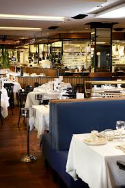
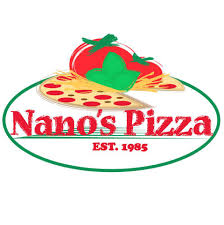
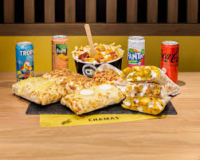

1. Las brasseries de Paul Bocuse
Estas cuatro brasseries del centro de Lyon pertenecen al gran chef Paul Bocuse. La comida es muy buena, cocina francesa con muchas opciones.
Precio: alto
2. Nano
Pizzería en el centro de Lyon. Las pizzas y pastas son deliciosas, los camareros son italianos y el ambiente es cálido.
Precio: razonable
3. Chamas Tacos
No puede venir a Lyon sin probar los tacos lioneses, una hamburguesa, carne de kebab, patatas fritas y salsa. Hay que probarlos.